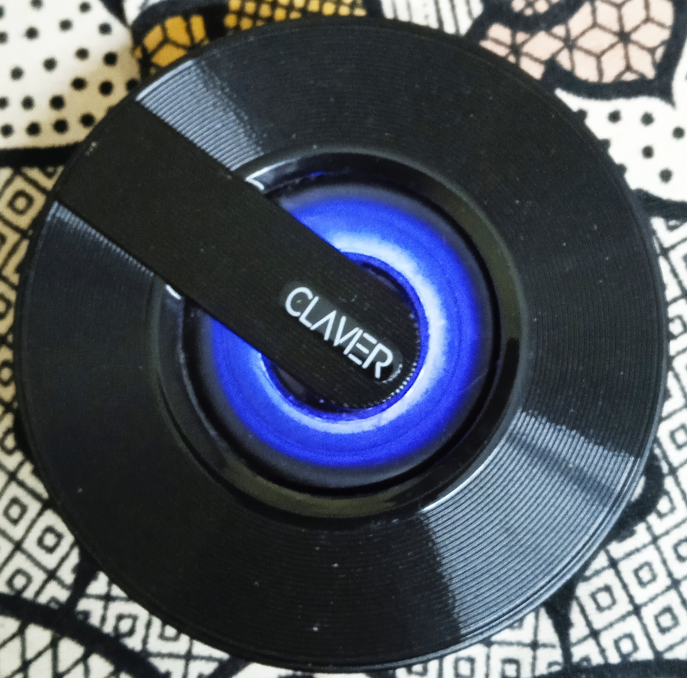
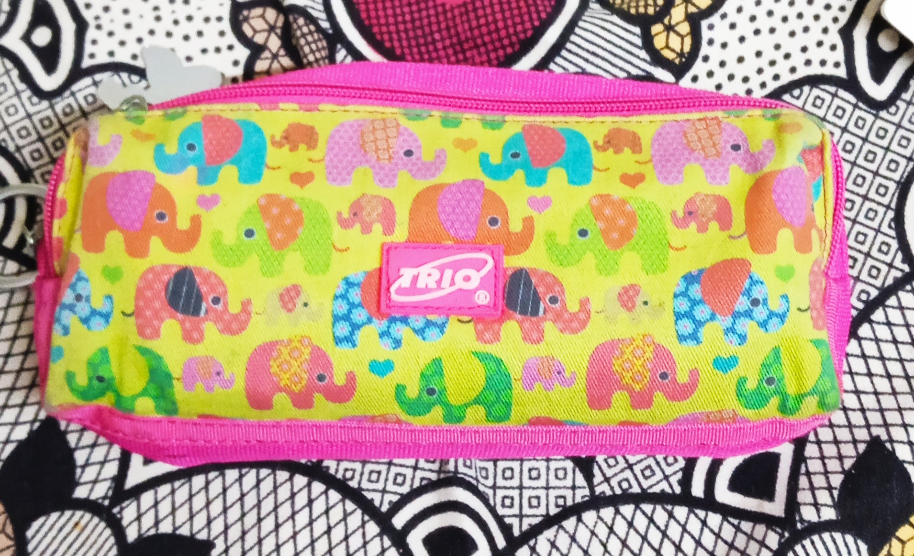

CASE STUDY BETWEEN GOOGLE LENS AND MOBILENET
GOOGLE LENS 
VS
MOBILENET
- Text Image -  Output On GOOGLE LENS - Speaker
- Text Image - Output On GOOGLE LENS - Pop It
- Text Image -  Output On GOOGLE LENS - Pouch
- Text Image - Output On GOOGLE LENS - Clock
-
Text Image -
 Output On GOOGLE LENS -
Hand Wash
Output On GOOGLE LENS -
Hand Wash
Output On MOBILENET - Microphone
Result -
GOOGLE LENS is more accurate
Output On MOBILENET - Type Writer Keyboard
Result -
GOOGLE LENS is more accurate
Output On MOBILENET - Pencil Case
Result -
It is a DRAW
Output On MOBILENET - Toilet Paper
Result -
Both are wrong
Output On MOBILENET - Soap Dispensor
Result -